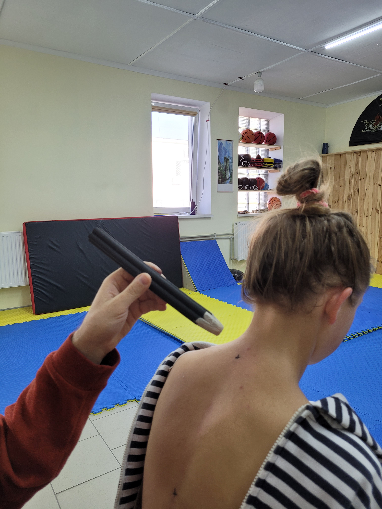
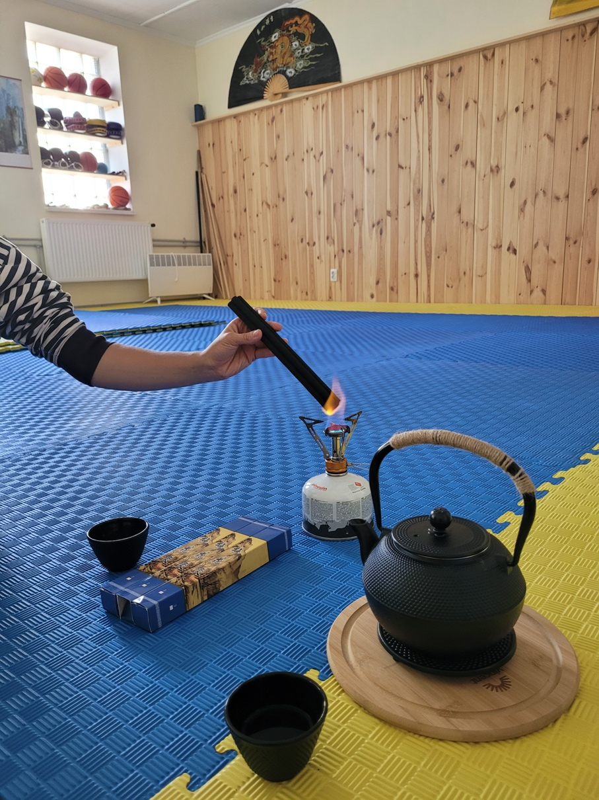

+38(063)855 25 02
+38(063)855 25 02 Городоцька, 174
Городоцька, 174
Моксотерапія
Прогрівання сигарою (моксотерапія) - це прогрівання біологічно активних точок тліючим кінчиком полинної або вугільної сигари. Цей старовинний метод лікування застосовується вже протягом декількох тисяч років в Китаї та інших країнах Сходу.
Який принцип дії моксотерапії?
Нагрівання біологічно активної точки активізує протікання крові та енергії Ци по меридіану, покращує кровопостачання органів і суглобів, наповнює теплом весь організм. Це безконтактний метод лікування, тобто сигара не торкається шкіри. Також нема відкритого вогню чи полум'я - сигара лишень повільно тліє.
Принцип моксотерапії: виганяємо холод, вологу з організму, а з ними і хворобу. Повертаємо вогонь, тепло, а з ними і здоров'я.
Які точки використовуються в моксотерапії?
Під час сеансу задіюються ті ж точки, що і для акупунктури чи точкового масажу. В традиційній китайській медицині вважається, що біологічно активні точки є проекцією внутрішніх органів і систем нашого організму. Діючи теплом на ці точки, ми можемо нормалізувати роботу відповідних органів та систем.
Для чого використовується моксотерапія?
✔ Підвищення імунітету - активізується вироблення інтерферонів - природних антибіотиків у нашому тілі;
✔ Усуваються застійні явища в органах, крові та лімфі;
✔ Насичення клітин і тканин теплом про запас, що дає змогу захищатися від негативних факторів зовнішнього середовища (холод, вітер, вологість) та використовувати акумульоване тепло для подолання хвороботворних факторів (мікроби, віруси, грибки), стресу, виснаження;
✔ Регуляція і нормалізація роботи нервової та ендокринної систем;
✔ Порятунок для тих, хто постійно мерзне в холодну пору року і страждає від холоду в кінцівках, вегетосудинної дистонії.
✔ Прогрівання хворого місця запускає процес регенерації тканин. Цього важко досягнути зовнішніми лікарськими препаратами - мазями, настоянками, оскільки вони не проникають на достатню глибину і мають тимчасовий зовнішній вплив.
✔ Сповільнює процеси старіння;
✔ Пробуджує холодні та застиглі, «закостенілі» ділянки хребта чи суглобів. В них підвищується гнучкість, зникають болі, знижується запалення.
 Особливо виражений ефект при прогріванні у групі, в спілкуванні з однодумцями. Тож приходьте до нас і отримайте свою порцію здоров'я!
Сеанси моксотерапії у Львові проводяться за адресою: вул. Городоцька, 174 (мотозавод)
Запис на сеанс: Тел./Telegram/Viber: +38 (063) 855 25 02